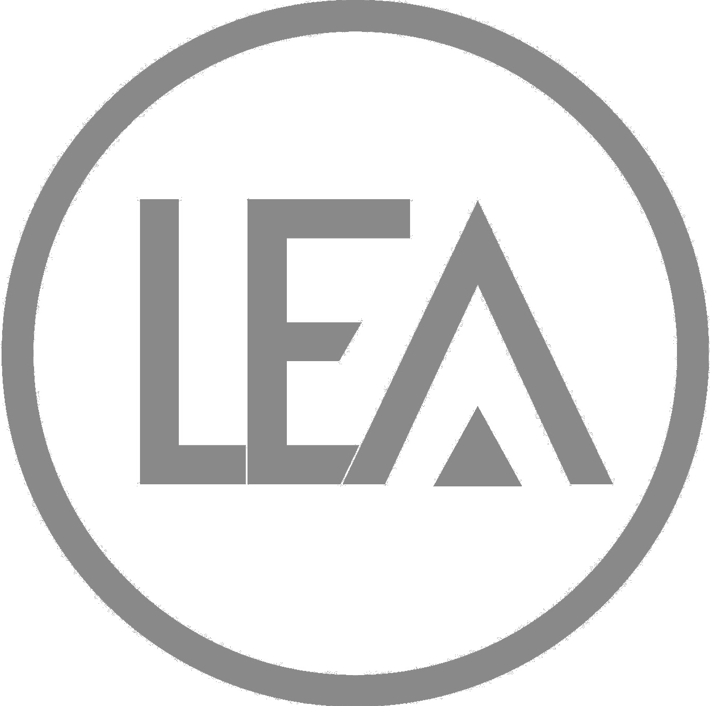

Somos o Laboratório
de Estatística Aplicada
O LEA já retornou às suas atividades de maneira remota!
Prestamos serviços de análise estatística de dados. Assessoramos alunos e professores no desenvolvimento de projetos de pesquisa e na elaboração de monografias, dissertações e teses de diversos cursos de graduação e pós-graduação da UFRN e de outras instituições do país.
As inscrições para as propostas de colaboração para o semestre 2022.1 estão abertas!
Clique aqui para baixar o edital.
Clique aqui para baixar a ficha de inscrição.
Descubra o que fazemos no LEA